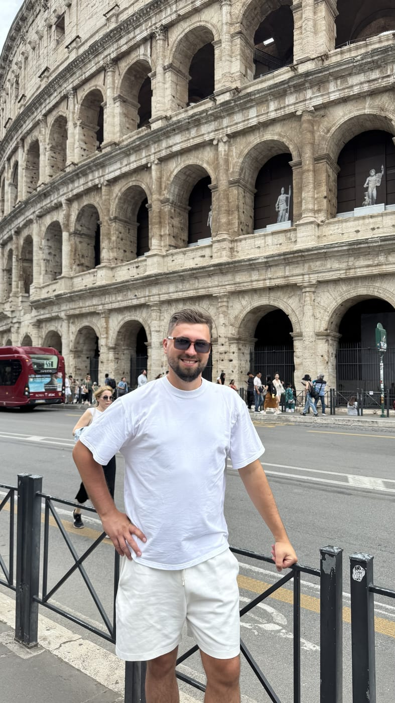

Дмитрий Шевченко
Директор «НеобхоДима Тревел»
Основатель и идейный вдохновитель компании. Тот, кто превращает «хочу в путешествие» в «вот билеты, вот виза, вот маршрут». Посетил более 30 стран и с радостью поделится личными рекомендациями и секретами, которые сделают путешествие ещё увлекательнее.